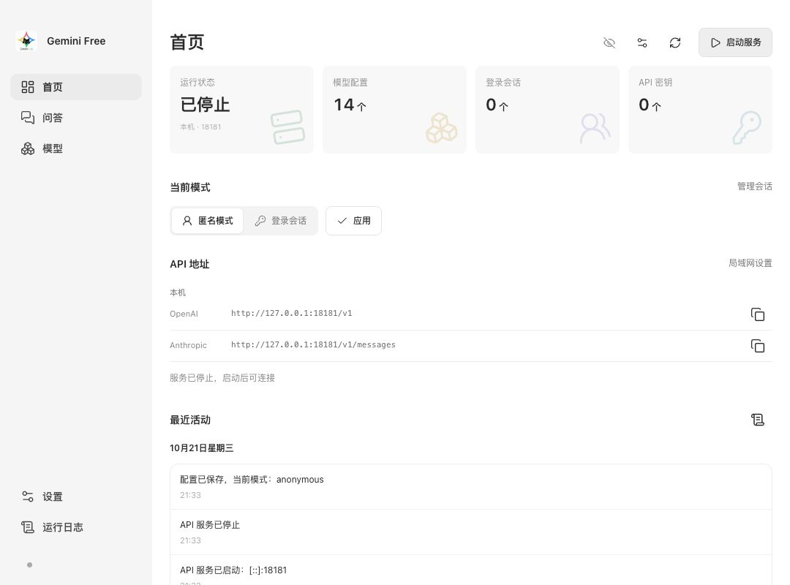
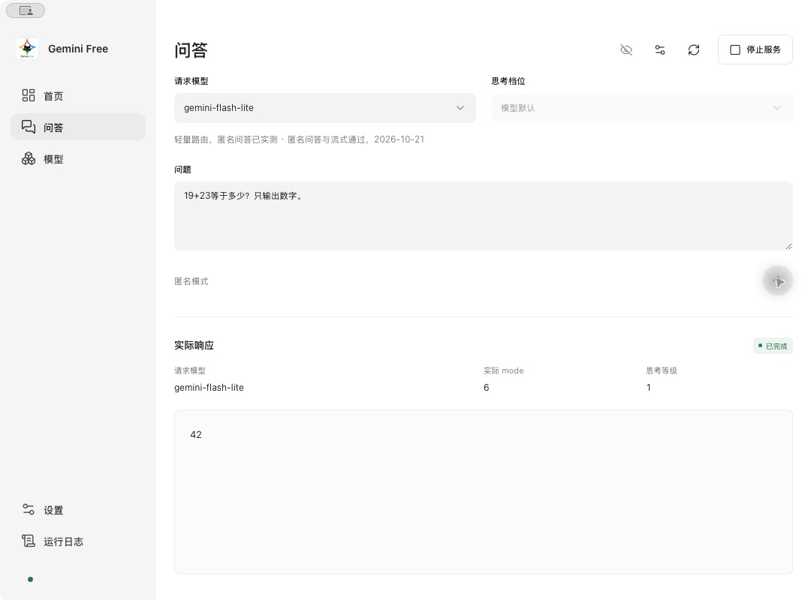
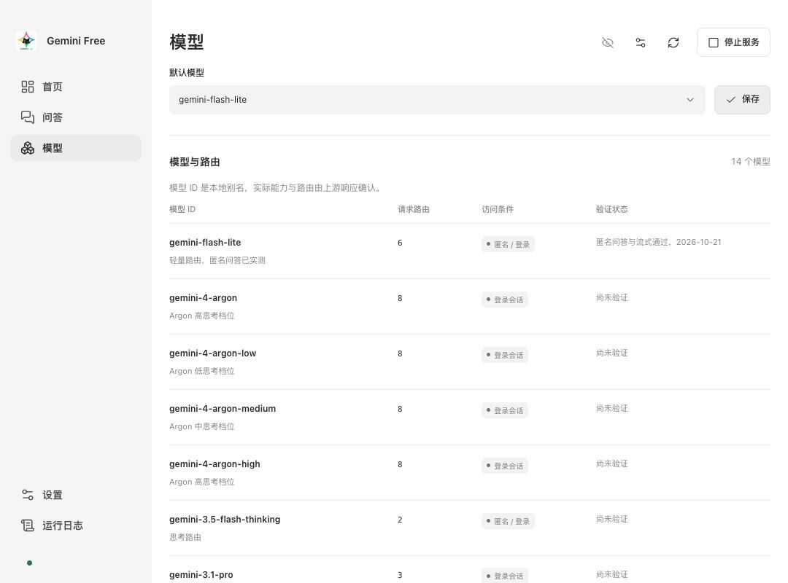
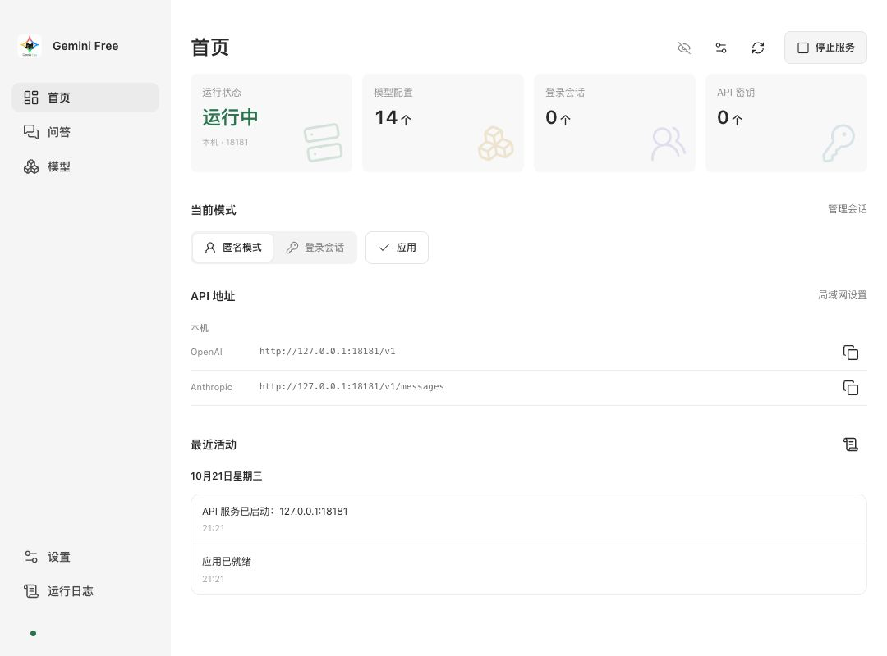
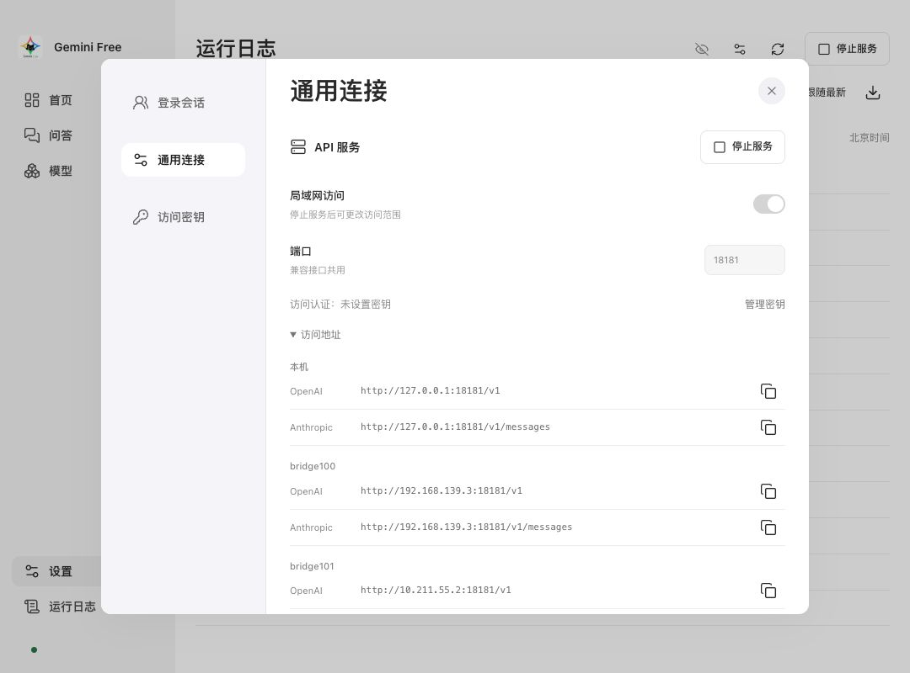
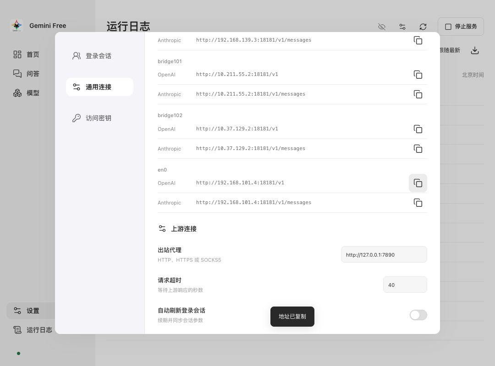
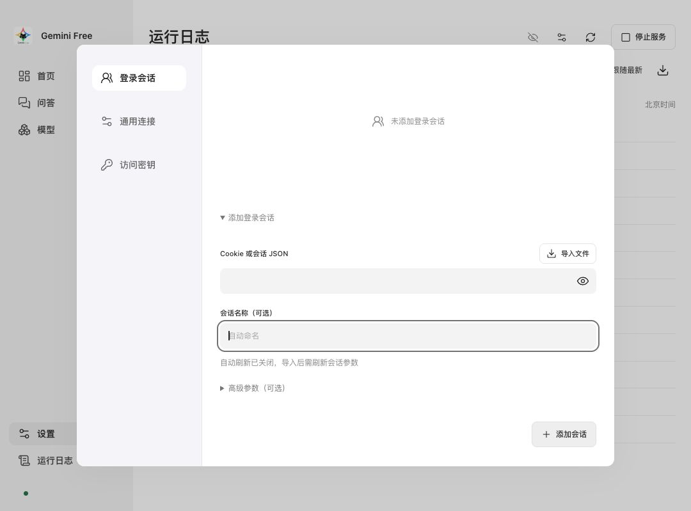
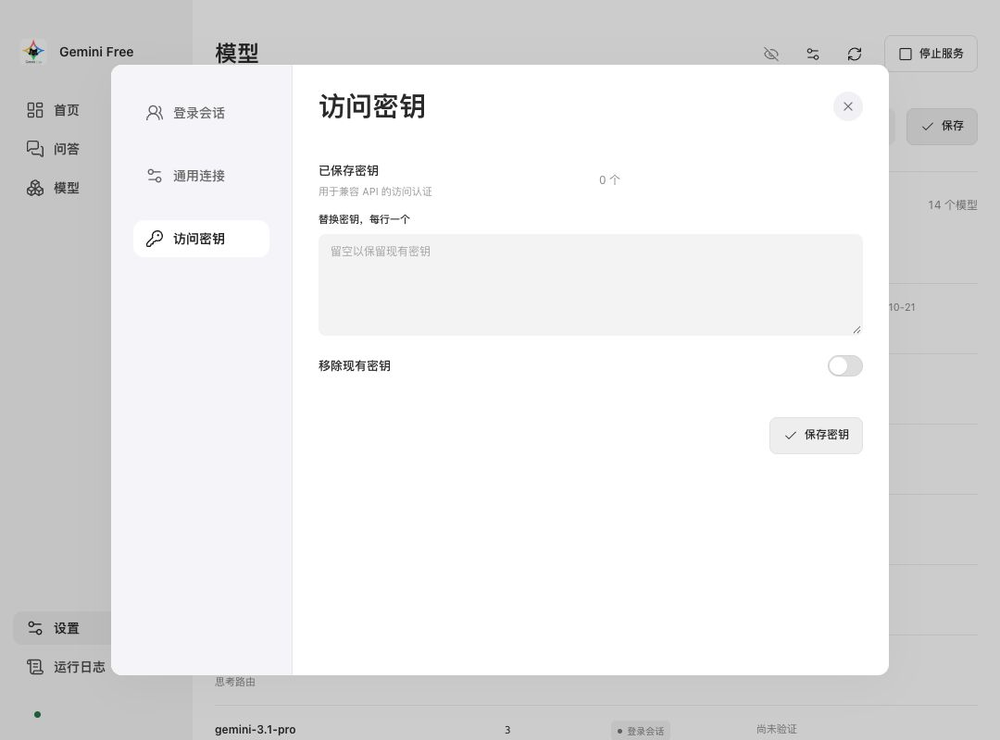
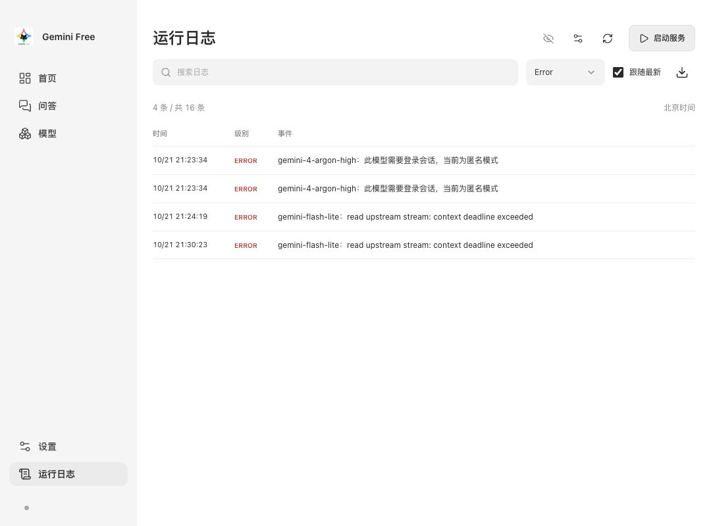

2026-10-21 · macOS 实际操作截图
Gemini Free 使用教程
从启动服务，到匿名问答、连接客户端与管理登录会话。
匿名问答真实返回了 42，Windows 启动和跨设备局域网请求通过。 最终接口检查为 18 / 19 项通过；OpenAI 流式请求及其单独重测均发生上游超时。 登录账号的高级模型能力尚未验证，不能将本教程理解为全部功能验收通过。
截图使用独立测试端口 18181，程序默认端口为 8081。
地址、代理、网卡和超时以你自己的设置为准。Windows 使用相同的页面入口，
本教程截图来自 macOS；Windows 本轮仅完成原生启动检查。
01
启动服务，使用匿名模式
- 打开 Gemini Free，在左侧进入首页。
- 在“当前模式”选择匿名模式，点击应用。匿名模式不需要账号 Cookie。
- 点击右上角启动服务。运行状态应变为“运行中”，按钮变为“停止服务”。

如果启动失败，先查看“运行日志”。端口被其他程序占用时，停止当前服务后，在设置里更换端口并保存，再启动。
02
发送第一条问题
- 进入左侧问答，请求模型选择
gemini-flash-lite。 - 输入问题，例如“19+23等于多少？只输出数字。”，点击输入框下方的发送图标。
- 查看“实际响应”。生成期间，发送位置会切换为停止生成按钮，可主动取消。

请求模型名称是本地配置名。“实际 mode”和“思考等级”来自上游响应， 需要一起查看；列表中有某个模型，不等于匿名模式具备该模型的权限。
03
选择默认模型
进入模型，使用页面上方的默认模型下拉框选择模型，再点击保存。 保存后重启仍会保留。问答页可单独选择本次请求使用的模型。

04
连接其他客户端
先启动服务，再在首页“API 地址”点击对应行右侧的复制图标。 OpenAI 和 Anthropic 使用不同的接口路径。
| 客户端设置 | 默认端口示例 |
|---|---|
| OpenAI 兼容 Base URL | http://127.0.0.1:8081/v1 |
| Anthropic API 根地址 | http://127.0.0.1:8081 |
| Anthropic 完整 Messages 端点 | http://127.0.0.1:8081/v1/messages |
| 匿名测试模型 | gemini-flash-lite |
首页复制的 Anthropic 地址是完整 Messages 端点。客户端若要求 Base URL， 应按该客户端的字段定义填写根地址，避免自动拼接成重复路径。 启用访问密钥后，在客户端填写同一个密钥；未设置密钥时服务不校验密钥。

用终端测试 OpenAI 接口
curl http://127.0.0.1:8081/v1/chat/completions \
-H 'Content-Type: application/json' \
-d '{"model":"gemini-flash-lite","messages":[{"role":"user","content":"你好"}]}'若已设置密钥，再加请求头 Authorization: Bearer 你的密钥。
05
允许局域网内其他设备访问
- 点击停止服务。运行中不能修改访问范围和端口。
- 从首页局域网设置，或设置 → 通用连接，开启局域网访问。
- 点击保存设置，再点击启动服务。
- 展开访问地址，找到与另一台设备处于同一网络的网卡，复制该网卡的地址。


另一台设备使用本机在局域网内的 IP，端口保持一致。虚拟机桥接网卡和 Wi-Fi 网卡的地址可能不同。 本轮已从 Windows 11 访问 Mac 的 Wi-Fi 地址，获得健康检查、模型列表及真实回答 42。
开放局域网前建议在“访问密钥”设置认证。局域网仅开放兼容 API，管理界面仍只在本机访问。 连不上时检查两端网络、所选网卡、服务状态及系统防火墙。
06
添加登录会话
- 进入设置 → 登录会话，点击新增会话。
- 在Cookie 或会话 JSON粘贴自己的有效登录会话，或点击导入文件选择导出的文本 / JSON。
- 名称可留空自动命名。点击添加会话；“高级参数”用于按需提供已有的会话参数。
- 问答缺少参数时自动读取 XSRF token 和网页构建标识，也可点击账号行的同步参数。程序使用导入的 Cookie，不再续期或回写响应 Cookie。
- 返回首页，选择登录会话及对应账号，点击应用，然后到问答页验证目标模型。

本轮没有验证有效账号的高级权限。Cookie 失效、参数读取被拒绝或实际思考档位不符时， 应按真实错误处理；程序不会把低档响应当作高级模型成功。
07
配置 API 访问密钥
进入设置 → 访问密钥，输入需要使用的密钥并保存，然后在调用客户端中填写相同密钥。 留空保存会保留原有配置；需要移除时使用页面提供的移除选项。 同时要求替换和移除会报冲突，应只选择一种操作。

08
排查错误，停止服务
进入运行日志，用搜索框查关键字，或在级别下拉框选择 Error。 右上角下载图标可以导出日志。“跟随最新”控制是否跟随新记录。

| 现象 | 处理方式 |
|---|---|
| 此模型需要登录会话 | 改用已验证的匿名模型，或配置具备权限的登录会话并应用。 |
| context deadline exceeded | 检查网络、出站代理与请求超时。记录失败后可手动再试；重试不保证成功。 |
| 401 / 参数同步失败 | 在浏览器确认账号登录有效，再重新导入有效 Cookie 并同步参数。 |
| 实际模型 / 思考档位不符 | 检查账号权限和会话参数，不应将此错误当作高级模型成功。 |
本轮使用 40 秒验证超时，默认配置为 180 秒；没有通过延长验证超时来掩盖失败。 协议直连也发生超时，具体是网络、代理还是上游服务所致尚未确定。
暂停对外提供 API 时，点击右上角停止服务。需要结束程序时使用应用退出命令； macOS 本轮已验证 ⌘ + Q 能结束进程。关闭窗口隐藏与托盘右键交互本轮未完整验证。